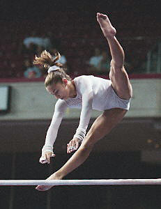

Courtney Kupets (USA)
2002 World UB Champion
2004 Olympic UB Bronze Medalist

Medal Total
Olympic Games: 1
Silver, 1 Bronze
World Championships: 1 Gold
Courtney was born on July 27,
1986. She began gymnastics as a toddler, following her older sister,
Ashley, to the gym. Courtney trained at Hill's Gymnastics in Maryland with
coach Kelly Hill. After winning the world UB title in 2002, Courtney's
goal was to make the 2004 Olympic team. She snapped her Achilles' tendon
during podium training at the 2003 world championships, but made a miraculous
recovery by summer 2004, winning both the US national title and the US Olympic
trials. Courtney won two medals at the Athens Games: a silver with the
team and a bronze on UB. She joined the University of Georgia's
gymnastics team and became one of the most dominant NCAA gymnasts
(male or female) of all time, leading the GymDogs to the team title and winning the all-around title three times. If not for another torn Achilles in early 2008, Kupets might have won a fourth AA title.
After graduating from Georgia with a major in housing and consumer economics, she performed in a Las Vegas show called Le Reve, and then coached at a gym in Georgia. In May 2017, Kupets was named head coach of
the Georgia GymDogs. She and husband Chris Carter have three children (2 girls and a boy).
Competition Results
1998
Jr. "A" JO Nationals: 17th AA, 7th FX
Jr. US Challenge: 10th AA
Parkette Invitational (9-12 years): 6th AA, 2nd V, 3rd B
Region 7, Level 10 Championships: 7th AA, 1st FX
1999
Jr. American Classic: 8th AA
Jr. CAN-USA Dual Meet: 2nd B
Jr. US Championships: 4th AA
Parkette Invitational (9-12 years): 5th AA
2000
Parkette Invitational (12-13 years): 2nd AA, 1st B, 1st FX
2001
Glasgow Grand Prix: 4th V, 4th UB, 5th B, 7th FX
Jr. US Championships: 9th AA
Jr. US Classic: 23rd AA
Parkette Invitational (14-15 years): 5th AA
2002
American Cup: 2nd AA
Parkette Invitational (15-16 years): 3rd AA
US Championships: 8th AA
US Classic: 25th AA
World Championships: 1st UB
2003
American Cup: 2nd AA, 1st UB
Parkette Invitational (16 years): 2nd AA
US Championships: 1st AA
US Classic: 1st AA
2004
Olympic Games: 2nd Team, 9th AA, 3rd UB, 5th B
US Championships: 1st AA
US Classic: 27th AA
US Olympic Trials: 1st AA
2006
NCAA Championships: 1st Team, 1st AA, 1st UB, 1st B
SEC Championships: 1st Team
2007
NCAA Championships: 1st Team, 1st AA, 1st V, 2nd UB, 2nd FX, 3rd B
2009
NCAA Championships: 1st Team, 1st AA, 1st UB, 1st B, 1st FX, 3rd V
This page was created on May 19,
2007 and was last updated on September 14, 2020.
© Gymn Forum